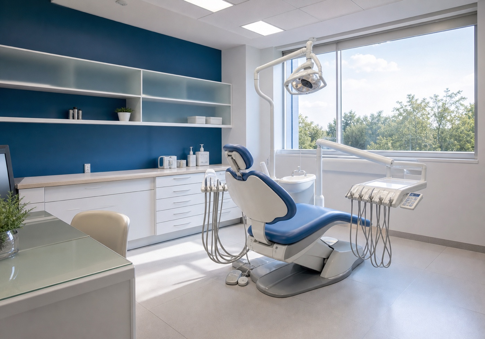

Especialidades odontológicas
Apresentação institucional sem detalhar tratamentos que ainda precisam ser confirmados pela equipe.
Especialidades odontológicas em Vitória
Conceito visual institucional para a CEO Clínica de Especialidades Odontológicas, com foco em contato direto, endereço e informações confirmáveis.

Para uma clínica de especialidades, a primeira página precisa ser objetiva: nome, localização, contato e uma explicação clara sem transformar tags de diretório em menu oficial.
Informações públicas reunidas
O demo usa termos amplos até a clínica confirmar especialidades, horários e canais oficiais.
Apresentação institucional sem detalhar tratamentos que ainda precisam ser confirmados pela equipe.
O número público aparece no topo, no hero e no bloco final para reduzir abandono.
Endereço em Jardim da Penha fica fácil de encontrar para quem busca atendimento próximo.
Depois da confirmação, a página pode receber fotos autorizadas, serviços reais e conteúdo oficial da clínica.
Agendamento
A pessoa identifica a clínica e entende que deve confirmar detalhes pelo contato oficial.
Clica no WhatsApp com uma mensagem inicial já preparada.
A CEO confirma especialidade, agenda, endereço e orientações de atendimento.
Contato público
Fontes públicas citam telefone, endereço, Facebook e ausência de site próprio. O demo evita usar fotos e listas de procedimentos como se fossem oficiais.
Pc Philogomiro Lannes, 200, Jardim da Penha, Vitória/ES
Conceito visual não oficial.
Abrir WhatsAppAntes de enviar
Não. É um conceito visual criado com informações públicas para demonstrar uma página própria.
Não. O demo usa termos amplos e espera a clínica confirmar a lista correta.
Não. A imagem é genérica, sem pessoas e sem copiar material de terceiros.